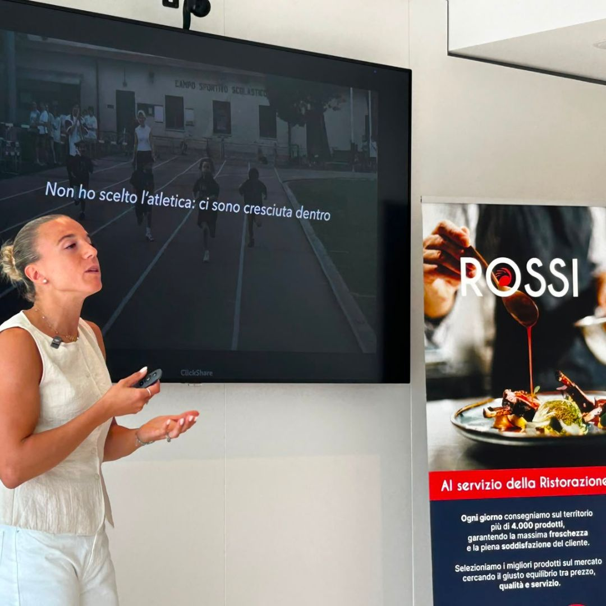
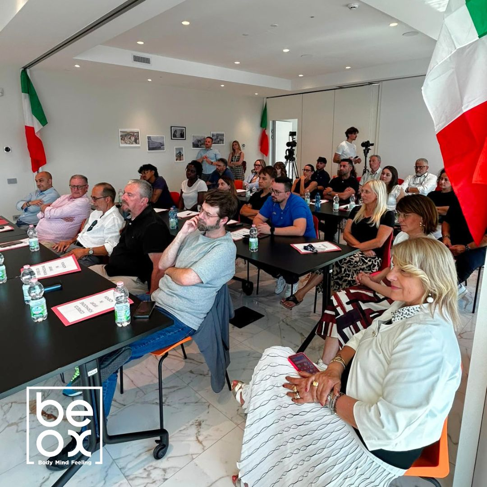
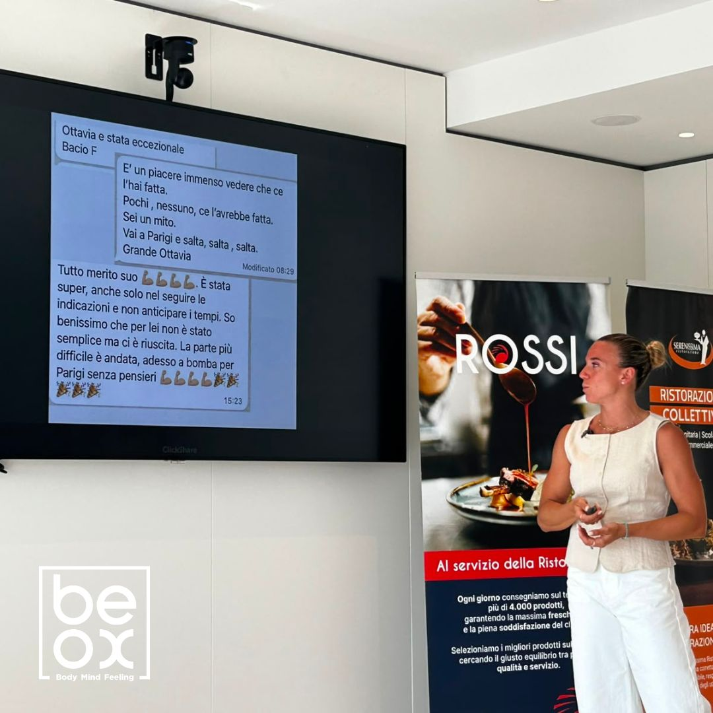

La Rossi Sport Academy nasce come percorso di formazione esperienziale progettato da BeOx per portare dentro l'organizzazione una riflessione concreta su conflitto, confronto, sconfitta, ripartenza e capacità di trasformare le difficoltà in sviluppo.


Il progetto: sport come linguaggio comune per l'azienda
Nel primo appuntamento il campione internazionale di pugilato Luca Rigoldi ha lavorato sul tema “Dal conflitto al confronto”. Il secondo incontro ha visto protagonista Ottavia Cestonaro, atleta olimpica di salto triplo, con il tema “Oltre i limiti: dalla sconfitta alla ripartenza”. Due prospettive sportive diverse, unite da un obiettivo comune: rendere visibili competenze decisive anche nel lavoro.
Dalla sconfitta alla ripartenza
Nello sport, come in azienda, il successo non dipende dall'assenza di ostacoli. Dipende dalla capacità di affrontare imprevisti, momenti difficili e risultati non attesi con consapevolezza, determinazione e spirito costruttivo. La testimonianza di un'atleta olimpica permette di parlare di resilienza senza ridurla a parola astratta: la rende esperienza, scelta, disciplina e comportamento.
Perché una Sport Academy aziendale genera valore
Una Sport Academy aziendale non è una sequenza di speech motivazionali. È un percorso che usa la metafora sportiva per sviluppare soft skills, cultura organizzativa e performance sostenibile. Ogni incontro deve essere collegato a un bisogno aziendale, a una competenza da allenare e a un trasferimento concreto nella quotidianità.

- Conflitto: passare dallo scontro al confronto utile.
- Ripartenza: reagire dopo una difficoltà senza perdere direzione.
- Resilienza: trasformare errore e sconfitta in apprendimento.
- Cultura organizzativa: creare un linguaggio comune attorno alla performance.
La lettura BeOx
Il valore della Rossi Sport Academy sta nel collegare grandi campioni, metafora sportiva e bisogni aziendali: l'esperienza ispira, il metodo traduce, il team applica.